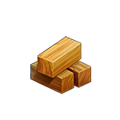

Получено: файл; исходный URL. Оригинальные байты с указанного зеркала; идентичность архивному файлу не проверена.
Брус секвойи
Мой Мир; историческая таблица, дата редакции не установлена- Тип
- нет данных
- Покупка
- 2 Зб; место покупки не указано
- Продажа
- 0 монет
- Как получить
- Где достать: Изготовить в бизнес-центре
- Применение
- Участвует в строительстве Моста и Белого дома
- Особенности
- нет данных
- Версия и дата
- Мой Мир; историческая таблица, дата редакции не установлена


Данные по источнику · Мой Мир · 20.06.2011
Предварительно: один источник; требует сверки. Требуется сверка.
- Покупка
- 2 зомбаксов (по источнику)
- Продажа
- 0 монет
- Получение
- Изготовление в бизнес-центре
- Применение
- Мост и Белый дом
Данные по источнику · ВКонтакте, ZOMBIA · 27 Июня 2011, 20:53; дата редакции не установлена
Предварительно: Данные одной исторической фанатской страницы; цифры и подписи изображений требуют сверки. Описание и условия сохранены по колонкам без додумывания.. Требуется сверка.
- Описание материала
- [изображение: Брёвна пальмы, зомби ферма, зомби мания, zombi.at.ua] Брус Секвойи 2000 Монет 2 Зомбакса
- Участвует в строительстве
- [изображение: зомби ферма, зомби мания]
- Как достать
- [изображение: зомби ферма, зомби мания] Создать в БЦ [изображение: Секвойя, зомби ферма, зомби мания, zombi.at.ua] Создать в Храме Выиграть в рулетке Выиграть в рулетке Выиграть в рулетке
- Участвует в создании
- нет текстовых данных; возможны неподписанные изображения
Данные по источнику · браузерная версия; платформа не указана · дата редакции неизвестна
Предварительно: Подписи и последовательность пиктограмм перенесены без автоматического толкования. Названия, цены и направления стрелок требуют визуальной сверки; возможны ошибки самого сайта.. Требуется сверка.
- Колонка 1 в порядке пиктограмм
- [подпись: Брус секвойи; файл brus_sekvoyi.png] [подпись: Стоимость (Зомбаксов); файл zombucks.png] 2 [подпись: Продажа; файл moneta.png] 2000
- Колонка 2 в порядке пиктограмм
- [значок: proizvoditsya.png] [подпись: Бизнес-Центр; файл biznes-centr.png] [подпись: Японский храм; файл yaponsky@20hram.png]
- Колонка 3 в порядке пиктограмм
- [значок: stroit.png] [подпись: Белый Дом; файл beliy_dom.png] [подпись: Японский храм; файл yaponsky@20hram.png] [подпись: Мост; файл most.png] [подпись: Пристань на Остров Майя; файл ostrow_maya.png]
- Колонка 4 в порядке пиктограмм
- [значок: sosdanie.png]
- Колонка 5 в порядке пиктограмм
- [значок: bonus.png] [подпись: Флаг Белоруси; файл flag_belorusy.png] [подпись: Флаг России; файл flag_rossii.png] [подпись: Флаг Украины; файл flag_ukrainy.png]
Данные по источнику · браузерная Зомби Ферма / Зомби Мания; платформа требует проверки · дата URL не гарантирует дату редакции
Предварительно: Индивидуальная страница прочитана автоматически, подписи значков могут содержать ошибки; даты редакции и независимость от ЗомбиСити не установлены.. Требуется сверка.
- Основной блок страницы и подписи изображений
- Материал [иллюстрация: Брус Секвойи] Брус Секвойи Цена покупки: 2 [иллюстрация: Зомбаксы] Цена продажи: 2000 [иллюстрация: Монеты] Продать или купить Брус секвойи можно в разделе Обменка Зомби Фермы Брус секвойи - материал, который делается из Бревен секвойи или обычных Досок.Широко применим в строительстве. Брус секвойи можно выигрывать в рулетках. Брус Секвойи можно выиграть в рулетке: Флаг Беларуси [иллюстрация: Флаг Беларуси] Флаг Украины [иллюстрация: Флаг Украины] Флаг России [иллюстрация: Флаг России] Брус Секвойи можно найти в ценностях: Подарок строителю [иллюстрация: Подарок строителю] Мандариновый сюрприз [иллюстрация: Мандариновый сюрприз] Брус Секвойи создается в постройках: Брус секвойи [иллюстрация: Брус секвойи] = 3 Секвойя [иллюстрация: Секвойя] + 1 Шестерня [иллюстрация: Шестерня] [иллюстрация: Стрелка] Японский храм [иллюстрация: Японский храм] Брус секвойи [иллюстрация: Брус секвойи] = 5 Доска [иллюстрация: Доска] + 1 Супер-клей [иллюстрация: Супер-клей] [иллюстрация: Стрелка] Бизнес-Центр [иллюстрация: Бизнес-Центр] Брус Секвойи участвует в строительстве построек: Часовая башня [иллюстрация: Часовая башня] Мост [иллюстрация: Мост туристов] Остров Х [иллюстрация: Остров Х] Остров Майя [иллюстрация: Остров Майя] Остров Надежды [иллюстрация: Остров Надежды] Страшный остров [иллюстрация: Страшный остров] Белый дом [иллюстрация: Белый дом] Японский сад [иллюстрация: Японский сад] Японский храм [иллюстрация: Японский храм] Китайская башня [иллюстрация: Китайская башня] Вавилон [иллюстрация: Вавилон] Хижина [иллюстрация: Хижина] Летучий корабль [иллюстрация: Летучий корабль] Остров Чудовища [иллюстрация: Остров Чудовища] Цирк [иллюстрация: Цирк] Таверна [иллюстрация: Таверна] Пиратская лодка [иллюстрация: Пиратская лодка] Чертовы ворота [иллюстрация: Чертовы ворота] Око [иллюстрация: Око] Коса [иллюстрация: Коса] Дредноут 950 [иллюстрация: Дредноут 950] Дредноут [иллюстрация: Дредноут]
Текст источника без реконструкции
Где достать: Изготовить в бизнес-центре Участвует в строительстве Моста и Белого дома
Связанные сущности
нет проверенных связей — требуется сверка.